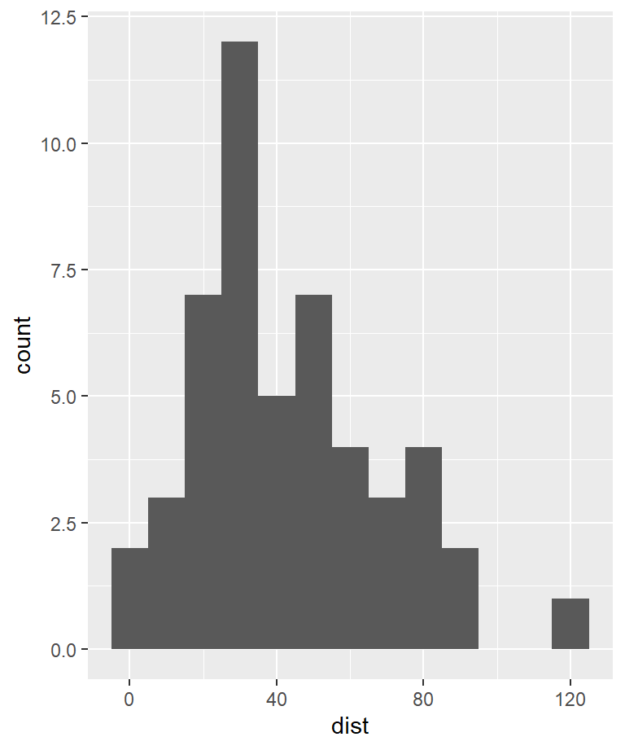
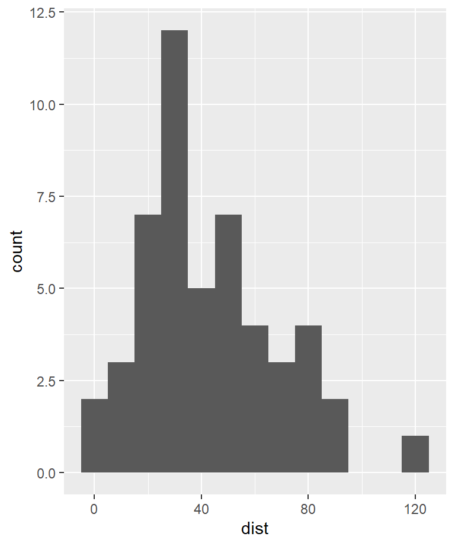

Chapter 1 통계 분석이란?
오늘날을 지식정보화 시대라고 자주 일컫는다. 지식정보화 시대는 다음과 같은 특징을 가진다.
- 사회경제적 측면에서는 사회경제 시스템이 매우 복잡짐에 따라 시스템을 이해하고 적절하게 의사결정하기 위해서 시스템에 대한 자세하고 다양한 데이터를 신속하게 획득하고 처리할 필요성이 증대된다.
- 기술적 측면에서는 정보 기술의 발전이 데이터을 손쉽고 빠르게 처리할 수 있는 하부구조를 제공해 준다.
- 따라서 오늘날의 모든 조직에게는 조직 내외부의 데이터를 신속히 처리하여 자신에게 필요한 정보와 지식을 빨리 추출해낼 수 있는 역량이 요구된다.
최근 회자되고 있는 ’빅데이터 분석(big data analysis)’은 이러한 사회경제적, 기술적 추세를 대변한다.
통계 데이터 분석은 수집된 데이터를 이용하여 유용한 정보를 뽑아내는 행위이다. 통계 데이터 분석은 크게 기술통계 분석(descriptive statistics analysis)과 추론통계 분석(inferential statistics analysis)으로 구분된다.
| major | grade | gender | class | mid | final | hw | scores | |
|---|---|---|---|---|---|---|---|---|
| 16 | ME | 2-year | F | class-1 | 46 | 45 | 88.30 | 63.79 |
| 17 | ME | 2-year | F | class-1 | 53 | 68 | 82.80 | 71.14 |
| 18 | ME | 2-year | F | class-1 | 46 | 53 | 84.30 | 64.99 |
| 19 | ME | 2-year | F | class-1 | 83 | 91 | 88.30 | 88.69 |
| 20 | ME | 2-year | M | class-1 | 55 | 56 | 91.00 | 70.59 |
| 21 | ME | 2-year | F | class-1 | 74 | 81 | 91.00 | 83.79 |
| 22 | ME | 2-year | F | class-1 | 36 | 41 | 91.00 | 60.39 |
| 23 | Others | 3-year | F | class-2 | 92 | 88 | 83.26 | 88.31 |
| 24 | Others | 4-year | F | class-2 | 75 | 67 | 91.33 | 80.00 |
| 25 | Others | 3-year | M | class-2 | 88 | 65 | 84.00 | 81.10 |
| 26 | ME | 4-year | M | class-2 | 88 | 81 | 88.59 | 87.28 |
| 27 | ME | 3-year | M | class-2 | 93 | 95 | 88.96 | 93.09 |
| 28 | ME | 3-year | M | class-2 | 90 | 88 | 90.59 | 90.58 |
| 29 | ME | 2-year | M | class-2 | 36 | 52 | 81.19 | 60.09 |
| 30 | ME | 3-year | M | class-2 | 41 | 67 | 81.56 | 66.87 |
| 31 | ME | 2-year | M | class-2 | 49 | 50 | 82.67 | 64.50 |
| 32 | ME | 2-year | M | class-2 | 67 | 61 | 88.96 | 75.09 |
| 33 | ME | 2-year | M | class-2 | 41 | 60 | 88.96 | 66.99 |
| 34 | ME | 2-year | M | class-2 | 84 | 74 | 74.15 | 79.64 |
| 35 | ME | 2-year | M | class-2 | 38 | 45 | 76.22 | 57.77 |
1.1 기술통계 분석
기술통계(descriptive statistics) 분석은 모집단의 특성을 분석자가 한눈에 파악할 수 있도록 데이터를 정리하고 표현하는 방법이다. 표 1.1처럼 한 강의를 수강하고 있는 20명의 학생의 명단이 있다고 하자. 이 명단을 훑어보는 것만으로 20명의 학생들의 특성을 파악하기는 어렵다. 만약 20명의 학생들의 남녀 분포에 대한 표가 주어져 있고 (표 1.2), 학년별 분포 및 전공 분포에 대한 막대그래프가 그려져 있다면 (그림 1.1), 강의를 듣는 학생의 특성을 좀 더 쉽게 파악할 수 있을 것이다.
| gender | count |
|---|---|
| F | 8 |
| M | 12 |
Figure 1.1: 수강생 학년 및 전공 분포
기술통계 분석은 이와 같이 모집단으로부터 수집된 데이터를 잘 요약하여 모집단에 대하여 유용한 정보를 생산한다. 기술통계 분석에서는 데이터를 그래프, 표 또는 대표값을 나타내는 숫자(통계량)로 요약한다. 우리는 실생활에서 많은 기술통계 분석 자료를 접할 수 있다. 물가지표, 실업률, GDP 등의 경제통계치, 여론 조사 결과를 그래프나 표 등으로 표현하는 것이 기술통계 분석의 대표적인 예라고 할 수 있다.
기술통계 분석에서 주의할 점은 수많은 데이터를 몇 개의 통계치로 요약하는 과정에서 단순화에 따른 정보의 손실이 발생할 수 밖에 없으며, 분석자의 관심에 따라 데이터를 요약하는 방식이 달라질 수 밖에 없다는 것이다. 그러므로 모든 기술통계 분석에는 어느 정도의 정보의 편향과 한계가 내재한다. 그러므로 기술통계 분석을 하거나 기술통계 분석 자료를 이용할 때는 기술통계량의 특성과 한계를 잘 이해하고 있어야 한다. 그래야만 통계에 근거한 올바른 의사결정을 할 수 있다.
1.2 추론통계 분석
추론통계(inferential statistics) 분석은 관심의 대상이 되는 전체집단(모집단)에 대한 조사가 불가능하거나 비효율적일 때 모집단의 일부(표본)만을 관측하여 모집단의 특성을 어림짐작(추측)하는 분석 방법이다. 조사된 표본을 이용하여 모집단에 대해 추측을 하는 것이므로 추측통계라고도 한다.
다음은 추론통계 분석이 사용되는 대표적인 사례이다.
- 여론조사나 정당의 지지도 조사 등이 있다. 이 경우 유권자 전체의 의견을 묻는 것은 많은 비용이 발생하므로 일정 수의 유권자에게만 의견을 물어 전체 유권자의 의견이나 지지도를 추측한다.
- 의약품의 임상시험도 의약품의 안전성과 유효성을 모든 환자에게 투약하여 확인하는 것은 위험하므로 일정 수의 자원자에게 먼저 의약품을 투여햐여 안정성과 효과성을 추측한다.
- 야생동물 보호구역에서의 사자의 개체수 추정 등도 추론통계 분석의 대표적인 사례이다. 실제 모든 사자를 관측할 수 없으므로 일부 관측된 사자의 개체수로 전체 사자 개체 수를 짐작하는 방법을 이용한다.
Figure 1.2: 추론통계 개념도
그림 1.2는 모집단과 표본, 그리고 추론통계와 기술통계의 역할이 무엇인지 보여준다. 추론통계 분석에서는 모집단의 일부만을 관측하므로 관측된 표본의 통계치(여론 조사에서 국정 지지도)가 모집단의 실제 통계치(국민의 실제 국정 지지도)와 똑같을 수는 없으며 어느 정도 차이가 발생한다. 따라서 추측통계치를 기반으로 의사결정을 하려면 이러한 추측 통계량의 신뢰성에 대한 판단이 필요하다. 즉, 추측한 값과 실제 값이 어느 정도 차이가 날 수 있는지에 대한 판단이 필요한다. 이를 판단하기 위해서는 모집단에서 표본을 뽑는 경우에 따라 표본 통계량이 확률적으로 어떻게 분포하는지에 대한 탐구가 필요하다. 그렇기 때문에 추론통계 분석은 확률 이론을 기반으로 하고 있다.
Figure 1.3: 통계분석의 분분류
그림 1.3은은 지금까지 설명한 기술통계 분석과 추론통계 분석의 분류를 보여준다. 기술통계는 주로 모집단의 정보를 표, 그래프, 통계치로 요약하고, 추론통계는 모집단에 대한 가설을 통계적으로 검정하거나, 모집단의 통계치를 추정한다.
1.3 통계 분석의 절차
통계 분석에서는 그림 1.4와 같이 여러 단계를 거쳐 작업이 수행된다.
Figure 1.4: 통계 분석의 단계
1.3.1 문제 정의
모든 통계 분석은 해결하고자 하는 문제의 정의로부터 시작된다.
- 분석의 목적 및 목표, 분석의 범위, 분석 결과 활용 방안, 분석 고려사항 등이 정의된다.
이 단계가 무시되거나 제대로 수행되지 않으면, 실제적인 의미가 없는 분석 결과가 도출된다.
1.3.2 데이터 수집
분석하고자 하는 문제가 잘 정의되었으면 분석에 필요한 데이터의 수집이 필요하다. 데이터의 수집 단계에서는 다음 작업이 수행된다.
- 데이터 명세: 분석에 필요한 데이터 항목을 정의한다.
- 데이터 수집 계획: 데이터 항목 별로 수집 방법, 수집 범위와 양, 수집 일정을 설계한다. 일반적으로 조사 방법론이나 실험 계획법 등을 참고하여 체계적인 절차에 따라 데이터 수집 방안을 설계한다.
- 데이터 수집 실행: 데이터 수집 계획에 따라 데이터 수집을 수행한다.
1.3.3 데이터 전처리 및 탐색
데이터가 수집되었으면 데이터를 전처리(pre-processing)하고 탐색한다. 데이터 전처리란 데이터를 분석에 맞도록 데이터를 변환하거나 데이터의 문제를 수정(정제)하는 작업을 의미한다.
- 데이터 변환: 일반적으로 수집된 데이터는 분석에 적합한 형태가 아니기 때문에 분석에 적합하도록 데이터를 결합, 분리, 변형하는 작업이 필요하다.
- 데이터 정제: 아울러 수집된 데이터에 문제가 없는지 탐색해 보아야 한다. 데이터가 소규모인 경우에는 데이터 사례를 하나씩 살펴볼 수도 있지만, 대부분의 경우 데이터의 규모가 매우 크므로 기술통계 방법을 사용하여 데이터를 요약하거나 그래프로 나타내어 데이터 문제를 살펴본다. 주로 데이터의 이상치, 결측치 등을 살펴보고 적절한 방법으로 데이터의 문제를 수정(정제)한다.
- 데이터 탐색: 다양한 기술통계 방법으로 데이터를 여러 측면에서 요약해 봄으로써, 해결하고자 하는 문제와 수집된 데이터에 대한 직관적 이해를 도모한다. 데이터 탐색을 통해 변수들의 분포 및 변환 필요성을 파악하고, 변수 간의 상관성을 탐색한다. 이러한 분석을 통해서 데이터에서 중요한 변수가 무엇인지 결정할 수 있고, 해결하고자 하는 문제를 적절히 설명 또는 예측할 수 있는 통계 모형 무엇인지에 대한 통찰을 얻게 된다. 데이터를 깊이 탐색하면 통계 모형에서는 확인할 수 없는 데이터 자체가 말해주는 문제에 대한 깊은 이해에 도달할 수 있다. 그림 1.5은 자동차의 속도와 제동 거리 데이터를 그래프를 이용하여 탐색한 결과이다.
 

Figure 1.5: 동일한 데이터에 대한 세 가지 통계 모형
데이터에 대한 전처리 및 탐색은 순차적으로 한 번에 완료되기 보다는 순환적으로 여러 번 반복되는 과정이다. 데이터 전처리와 탐색 과정에서 얻어진 관찰과 통찰에 의해 데이터를 다시 수집하거나 데이터를 변형하는 작업이 반복될 수 있다. 또한 통계 모형 수립 단계에서 얻어진 통찰에 의해 다시 데이터를 수집과 전처리 및 탐색 과정이 반복될 수도 있다.
1.3.4 통계 모형 수립
단순한 문제들은 데이터에 한두 개의 변수만 있지만, 복잡한 문제의 경우 데이터에 수십에서 수십만 개의 변수가 존재한다. 한두 개의 변수만 가진 문제는 데이터 탐색만으로도 변수들 사이의 관계를 쉽게 확인할 수 있지만, 변수가 많아지면 변수들 사이의 관계를 체계적으로 파악할 수 있는 방법이 필요하다. 또한 변수의 수가 한두 개더라도 변수들 간의 상관성의 정도를 수치화하거나 상관성의 신뢰도를 추정하려고 한다면 이를 파악할 수 있는 방법도 필요하다.
통계 모형(statistical models)은 분석의 목적이 되는 변수와 다른 변수들의 관계를 수학적으로 모형화함으로써 목적 변수의 변화를 설명하거나 예측한다. 예를 들어 코로나19의 치사율이 높은 사람과 그렇지 않은 사람을 예측하여 치사 가능성 높은 사람에게 별도의 처방을 한다고 해보자. 이 문제에서 우리가 분석하고자 하는 목적이 되는 변수는 치사율이다. 만약에 치사율에 영향을 주는 다른 변수로 환자의 나이 하나만을 고려한다고 해 보자. 그러면 환자의 나이와 치사율의 관계의 유무는 산점도라는 그래프를 그려보면 쉽게 확인해 볼 수 있다. 그러나 환자의 나이가 치사율에 영향을 주는 정도를 수치화하거나 이 관계의 신뢰도를 확인하려고 한다면 두 변수의 관계를 수학적으로 정의한 통계적 모형이 필요하다. 아울러 치사율을 예측하기 위하여 환자의 나이뿐 아니라, 성별, 체중, 당뇨병 유무, 기관지 질환 여부, 유전적 특징 등도 함께 조사하였다고 하자. 목적 변수인 치사율과 관계된 변수들이 많고 이 변수들 간의 양의 음의 시너지 효과까지 같이 고려한다면, 이 변수들과 목적 변수의 관계를 그래프만으로 파악하는 것은 매우 어려워진다. 이러한 경우에 사용할 수 있는 것이 통계 모형이다.
Figure 1.6: 동일한 데이터에 대한 세 가지 통계 모형
그런데 목적 변수와 설명 변수의 관계를 수학적으로 모형화하는 방법은 무한히 많다. 설명 변수와 목적 변수가 선형적인 관계만 있다고 가정하여 모형화할 수도 있고, 변수들 사이에 복잡합 비선형 관계가 있을 수 있다고 가정하고 모형화 할 수도 있다. 설명 변수 중에서 중요한 일부만 추려서 모형을 만들 수도 있고, 모든 설명 변수를 다 사용하여 모형을 만들 수도 있다. 이러한 수많은 가능한 모형들 중에서 가장 적합한 모형은 문제마다 다를 수 있다. 어떤 문제의 경우에는 소수 변수만 사용된 단순한 선형 모형이 데이터를 가장 잘 설명할 수도 있고, 다른 경우에는 모든 변수가 이용되는 복잡한 비선형 모형이 데이터를 가장 잘 예측할 수도 있다. 그렇기 때문에 여러 개의 가능한 모형을 선택하여 데이터에 적합해 보고 그 중 가장 데이터에 가장 잘 적합되는 모형을 최종 모형으로 선택하게 된다.1 그러나 무수히 많은 가능한 모형을 모두 데이터에 적합하는 것은 너무나 많은 분석 시간이 소요되므로 현실적이지도 않고 효율적이지도 않다. 그러므로 문제에 가장 적합한 수~수십 개의 모형으로 제한하여 모형을 생성하게 된다. 따라서 데이터 탐색의 과정을 통해 변수들의 분포와 관계를 탐색해 보고, 어떤 모형을 적합해 보는 것이 가장 적절한지 판단해야 한다. 그림 1.6은 자동차의 속도와 제동 거리의 관계를 세 가지 다른 통계 모형으로 적합해 본 결과이다.
통계 모형을 수립하는 과정은 만족스러운 최종 모형은 얻을 때까지 다음 세 작업을 반복하는 과정이다.
- 모형 정의: 목적 변수와 설명 변수의 수학적 관계를 정의한다.
- 모형 적합: 정의된 통계 모형을 수집된 데이터에 적합시킨다. 일반적으로 통계 모형은 설명 변수와 목적 변수의 관계를 나타내는 매개변수(parameters)가 있고, 통계 모형의 적합은 데이터를 가장 잘 설명할 수 있도록 이 매개변수가 조정되는 과정이다.
- 모형 평가: 적합된 모형이 얼마나 데이터를 잘 설명하는지 또는 예측하는지 평가해 본다. 정량적인 평가 척도를 가지고 모형의 적합성을 평가하는 것뿐만 아니라, 모형과 실제 데이터의 차이를 탐색하여 모형의 핵심 가정이 만족되는지 등을 살펴보아야 한다. 모형이 데이터를 잘 적합하지 못하면 오차의 이유를 탐색하고 오차를 줄이기 위해 모형에 반영되어야 하는 요소가 무엇인지를 판단하여 새로운 모형을 정의하여 앞의 과정을 반복해 나간다.
1.3.5 결론 도출
데이터에 대한 탐색적 분석과 통계 모형 수립에서 획득된 결과를 이용하여 문제에 대한 결론을 내린다.
- 탐색적 분석과 통계 모형 수립에서 얻어진 문제에 대한 핵심 관찰 사실을 정리한다.
- 통계 분석에서 얻어진 결론과 기존에 알려진 지식들과의 동일한 점과 상이한 점을 비교 분석하고, 차이가 있다면 왜 발생했는지 논의한다.
- 통계 분석을 통해서 얻어진 통찰을 문제 해결에 어떻게 이용할지를 논의한다.
- 추후에 보강하거나 발전시켜야 할 통계 분석 문제가 무엇인지를 논의한다.
이 책에서는 데이터 탐색과 통계 모형 수립 단계를 중심으로 통계 분석을 논의한다. 이는 책 하나에 통계 분석의 전 과정을 담기 어렵기 때문이기도 하거니와, 문제 정의, 데이터 수집, 결론 도출 단계는 문제마다 매우 다르기 때문에 정형화된 방식으로 설명하기 어렵기 때문이다. 그러므로 이 책에 다루지 않은 다른 단계들은 덜 중요하기 때문인 것으로 착각하는 것은 곤란하다. 사실 실제 통계 분석의 성패는 정확한 문제 정의와 좋은 품질의 데이터를 수집하는 것에 더 많이 달려 있다. 그리고 이러한 단계에 투여되는 시간과 비용이 더 큰 경우가 많다. 그리고 데이터 전처리는 통계 분석에서 많은 시간이 소요되는 단계이고 중요한 작업이지만 데이터를 다루는 소프트웨어(R 등의 프로그래밍 언어나 엑셀 등)를 다루는 기술이 필요한 분야이다. 이에 대해서는 저자의 별도의 책 R 프로그래밍에서 다루고 있으니 관련 문헌을 참조하기 바란다. 그러므로 이 책에서는 데이터에 대한 수집과 전처리가 잘 수행되어서 통계 분석에 적합한 형태로 이미 준비되었다는 가정 하에 데이터를 통계적으로 탐색하고 통계 모형을 수립하는 방법에 대해서 다루고자 한다.
1.4 통계 데이터에서 변수의 종류
통계 데이터는 일반적으로 표 표 1.1나 그림 1.7과 같이 행과 열로 구성된 행렬 형식으로 구성된다.

Figure 1.7: 일반적인 통계 데이터 형식
데이터 행렬에서 행은 일반적으로 하나의 관측 대상에 대한 정보로 구성된다. 표 1.1에서는 행은 한 학생에 대한 정보이다. 그래서 행을 ‘관측(observation)’이라고 한다. 데이터마이닝(data mining)이나 기계학습(machine learning) 등에서는 데이터의 한 행은 여러 데이터 중 한 사례-표 1.1에서 여러 학생 중 특정 학생의 사례-이므로, ’사례(instances)’ 또는 ’예(examples)’라고도 한다. 그리고 데이터베이스에서는 데이터베이스에 저장되는 한 행을 레코드라 부르기 때문에 ’레코드(record)’라고도 한다.
데이터 행렬에서 열은 일반적으로 관측 대상의 한 속성에 대한 정보이다. 표 1.1에서 열은 학생의 전공, 학년, 성별 등의 속성 정보를 가지고 있다. 그래서 열을 ’속성(attributes)’라고 한다. 데이터마이닝, 기계학습, 패턴 인식 분야에서는 열이 한 관측 사례에 대한 특징을 나타내므로 ’특징(features)’라고도 한다. 통계학에서는 ’변수(variable)’이라는 말로 열을 자주 표현한다.
이 책에서는 데이터 행렬의 열은 주로 변수라고 표현하지만, 속성, 열 등도 같은 의미로 사용할 것이다.
통계 데이터에서 변수는 크게 질적(qualitative) 변수와 양적(quantitative) 변수로 구분된다. 뒤에서 기술통계 분석과 추론통계 분석에서 보겠지만, 변수의 종류에 따라 통계 분석 방법에 차이가 발생한다. 그림 1.8에는 통계 분석에 사용되는 변수의 종류가 나열되어 있다.
Figure 1.8: 변수의 종류
1.4.1 질적 변수
질적 변수(qualititive variables)는 학생들의 성별, 출신지역, 학년, 전공 등과 같이 관측치가 어떤 범주에 속하는지를 나타내는 변수를 말한다. 질적 변수는 값에 따라 서로 다른 질적 특성을 가지고 있는 사례로 구분되지만 수량적 의미를 가지지 않으므로 사칙연산 등의 수량적 조작을 할 수 없다.
질적 변수는 명목형(nominal)과 순서형(ordinal) 변수로 구분된다.
명목형 변수는 성별, 출신지역, 전공처럼 데이터 값의 크기나 순서가 의미없는 데이터이다. 남성과 여성에 어떤 일반화된 순서는 없다. 보통 명목형 데이터를 기술할 때 편의상 숫자를 이용하여 기술하는 경우가 많다. 예를 들어 남성은 ‘1’, 여성은 ’2’와 같이 기술하는 경우다. 이 때도 남성과 여성에 어떤 순서가 있다기보다는 서로 다른 속성을 나타내는 값이라는 의미만을 가진다.
순서형 데이터는 질적인 특성을 나타낸다는 것은 명목형 데이터와 같지만 데이터의 값에 순서가 있는 경우다. 학생들의 학년은 1학년에서 4학년으로 증가함에 따라 순서에 의미를 부여할 수 있다. 그러나 이 경우에도 순서에만 의미가 있는 것이지 사칙연산이 가능한 양적인 의미를 가지고 있는 것은 아니다.
질적 변수는 범주형 변수(categorical variables)라고도 한다. 이름이 나타내듯이 범주형 변수는 범주 별로 발생 빈도가 얼마인지가 주요한 관심의 대상이 된다. 한 강의의 수강생에서 남성과 여성의 비율, 정당별 지지율 등이 그 예라고 할 수 있다. 데이터에 범주형 변수가 여러 개 있을 때, 두 범주형 변수의 관계를 빈도수를 교차하여 분석하기도 한다. A와 B 정당을 지지하는 비율이 남성과 여성별로 차이가 있는가에 대한 분석이 그 예라고 할 수 있다. 이 경우 범주형 변수가 순서형 변수이면 순서적인 의미를 가지는 분석도 할 수 있다. 예를 들어 학년이 올라갈수록 A정당 지지율이 높아지는가 등을 분석할 수도 있다.
1.4.2 양적 변수
양적 변수는 한 강의에 참석하는 학생들의 신장, 체중 등 수량적인 의미를 가지는 수치로 된 변수를 말한다. 양적 변수는 수치적 의미를 가지므로 사칙연산 등이 가능하다.
양적 변수는 다시 비율형(ratio)과 구간형(interval) 변수로 구분된다.
비율형 변수는 절대 0점이 존재하는 양적 변수를 말한다. 신장, 체중 등이 이러한 변수의 예이다. 비율형 변수에서는 두 수치 변수의 차이뿐 아니라 두 변수의 비율에 의미를 부여할 수 있다. 즉 A학생이 B학생보다 10% 더 크다라는 비율적 서술이 가능하다.
반면 구간형 변수는 절대 0점이 존재하지 않아 수치들 사이의 차이에만 의미를 부여할 수 있고 비율에는 의미를 부여할 수 없는 변수를 말한다. 온도 등이 대표적인 예이다. 어제 기온이 섭씨 10도이고 오늘 기온이 섭씨 20도라고 오늘 날씨가 어제에 비해 2배 덥다라고 표현하지 않는다. 이는 온도의 0이 되는 지점이 절대적인 0이 아니기 때문이다.
양적 변수의 분석에서는 수치들의 중심값, 퍼진 정도 등이 관심의 대상이 된다. 여러 개의 양적 변수가 존재하면 변수 간의 상관성도 분석할 수 있다. 신장이 커지면 체중이 커지는가, 신장이 2배 커지면 체중은 평균적으로 몇 배 커지는가 등이 그 예라고 할 수 있다.
아울러 양적 변수와 질적 변수의 상관성에 대한 분석도 가능하다. 신장의 차이는 여성보다 남성이 큰지를 분석한다면 신장이란 양적 변수와 성별이란 질적 변수를 연관지어 분석하는 것이라 할 수 있다.
앞으로 우리는 기술통계 분석과 추론통계 분석에서 변수가 질적 변수인가 양적 변수인가에 따라 분석의 방식이 조금씩 달라지는 것을 보게 될 것이다.
가장 잘 적합된다는 의미가 모형이 데이터에 딱 들어맞아야 한다는 것은 아니다. 오히려 데이터에 딱 들어맞는 모형은 과적합된 모형일 수 있다. 그렇기 때문에 고전적인 통계 분석에서는 모형의 복잡도 대비 데이터 적합도를 고려하여 최종 모형을 선택하고, 데이터마이닝나 현대적인 통계 분석에서는 별도의 검증 데이터에서 여러 모형을 테스트하여 가장 성능이 좋은 모형을 최종 모형으로 선택한다.↩︎